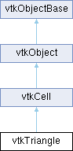

|
Etrek
|
|
Etrek
|
a cell that represents a triangle More...
#include <vtkTriangle.h>

Public Member Functions | |
| vtkTypeMacro (vtkTriangle, vtkCell) | |
| void | PrintSelf (ostream &os, vtkIndent indent) override |
| vtkCell * | GetEdge (int edgeId) override |
| double | ComputeArea () |
| void | Clip (double value, vtkDataArray *cellScalars, vtkIncrementalPointLocator *locator, vtkCellArray *polys, vtkPointData *inPd, vtkPointData *outPd, vtkCellData *inCd, vtkIdType cellId, vtkCellData *outCd, int insideOut) override |
| const vtkIdType * | GetEdgeArray (vtkIdType edgeId) |
| int | IntersectWithLine (const double p1[3], const double p2[3], double tol, double &t, double x[3], double pcoords[3], int &subId) override |
| int | GetParametricCenter (double pcoords[3]) override |
| double | GetParametricDistance (const double pcoords[3]) override |
| int | GetCellType () override |
| int | GetCellDimension () override |
| int | GetNumberOfEdges () override |
| int | GetNumberOfFaces () override |
| vtkCell * | GetFace (int) override |
| int | CellBoundary (int subId, const double pcoords[3], vtkIdList *pts) override |
| void | Contour (double value, vtkDataArray *cellScalars, vtkIncrementalPointLocator *locator, vtkCellArray *verts, vtkCellArray *lines, vtkCellArray *polys, vtkPointData *inPd, vtkPointData *outPd, vtkCellData *inCd, vtkIdType cellId, vtkCellData *outCd) override |
| int | EvaluatePosition (const double x[3], double closestPoint[3], int &subId, double pcoords[3], double &dist2, double weights[]) override |
| void | EvaluateLocation (int &subId, const double pcoords[3], double x[3], double *weights) override |
| int | TriangulateLocalIds (int index, vtkIdList *ptIds) override |
| void | Derivatives (int subId, const double pcoords[3], const double *values, int dim, double *derivs) override |
| double * | GetParametricCoords () override |
| void | InterpolateFunctions (const double pcoords[3], double sf[3]) override |
| void | InterpolateDerivs (const double pcoords[3], double derivs[6]) override |
| Public Member Functions inherited from vtkCell | |
| vtkTypeMacro (vtkCell, vtkObject) | |
| void | Initialize (int npts, const vtkIdType *pts, vtkPoints *p) |
| void | Initialize (int npts, vtkPoints *p) |
| virtual void | ShallowCopy (vtkCell *c) |
| virtual void | DeepCopy (vtkCell *c) |
| virtual int | IsLinear () VTK_FUTURE_CONST |
| virtual int | RequiresInitialization () |
| virtual void | Initialize () |
| virtual int | IsExplicitCell () VTK_FUTURE_CONST |
| virtual int | RequiresExplicitFaceRepresentation () VTK_FUTURE_CONST |
| virtual void | SetFaces (vtkIdType *vtkNotUsed(faces)) |
| virtual vtkIdType * | GetFaces () |
| vtkPoints * | GetPoints () |
| vtkIdType | GetNumberOfPoints () const |
| vtkIdList * | GetPointIds () |
| vtkIdType | GetPointId (int ptId) VTK_EXPECTS(0< |
| virtual int | Inflate (double dist) |
| virtual double | ComputeBoundingSphere (double center[3]) const |
| virtual int | Triangulate (int index, vtkIdList *ptIds, vtkPoints *pts) |
| virtual int | TriangulateIds (int index, vtkIdList *ptIds) |
| void | GetBounds (double bounds[6]) |
| double * | GetBounds () VTK_SIZEHINT(6) |
| double | GetLength2 () |
| virtual int | IsPrimaryCell () VTK_FUTURE_CONST |
| virtual void | InterpolateFunctions (const double vtkNotUsed(pcoords)[3], double *vtkNotUsed(weight)) |
| virtual void | InterpolateDerivs (const double vtkNotUsed(pcoords)[3], double *vtkNotUsed(derivs)) |
| virtual int | IntersectWithCell (vtkCell *other, double tol=0.0) |
| virtual int | IntersectWithCell (vtkCell *other, const vtkBoundingBox &boudingBox, const vtkBoundingBox &otherBoundingBox, double tol=0.0) |
| Public Member Functions inherited from vtkObject | |
| vtkBaseTypeMacro (vtkObject, vtkObjectBase) | |
| virtual void | DebugOn () |
| virtual void | DebugOff () |
| bool | GetDebug () |
| void | SetDebug (bool debugFlag) |
| virtual void | Modified () |
| virtual vtkMTimeType | GetMTime () |
| void | RemoveObserver (unsigned long tag) |
| void | RemoveObservers (unsigned long event) |
| void | RemoveObservers (const char *event) |
| void | RemoveAllObservers () |
| vtkTypeBool | HasObserver (unsigned long event) |
| vtkTypeBool | HasObserver (const char *event) |
| vtkTypeBool | InvokeEvent (unsigned long event) |
| vtkTypeBool | InvokeEvent (const char *event) |
| std::string | GetObjectDescription () const override |
| unsigned long | AddObserver (unsigned long event, vtkCommand *, float priority=0.0f) |
| unsigned long | AddObserver (const char *event, vtkCommand *, float priority=0.0f) |
| vtkCommand * | GetCommand (unsigned long tag) |
| void | RemoveObserver (vtkCommand *) |
| void | RemoveObservers (unsigned long event, vtkCommand *) |
| void | RemoveObservers (const char *event, vtkCommand *) |
| vtkTypeBool | HasObserver (unsigned long event, vtkCommand *) |
| vtkTypeBool | HasObserver (const char *event, vtkCommand *) |
| template<class U, class T> | |
| unsigned long | AddObserver (unsigned long event, U observer, void(T::*callback)(), float priority=0.0f) |
| template<class U, class T> | |
| unsigned long | AddObserver (unsigned long event, U observer, void(T::*callback)(vtkObject *, unsigned long, void *), float priority=0.0f) |
| template<class U, class T> | |
| unsigned long | AddObserver (unsigned long event, U observer, bool(T::*callback)(vtkObject *, unsigned long, void *), float priority=0.0f) |
| vtkTypeBool | InvokeEvent (unsigned long event, void *callData) |
| vtkTypeBool | InvokeEvent (const char *event, void *callData) |
| virtual void | SetObjectName (const std::string &objectName) |
| virtual std::string | GetObjectName () const |
| Public Member Functions inherited from vtkObjectBase | |
| const char * | GetClassName () const |
| virtual vtkTypeBool | IsA (const char *name) |
| virtual vtkIdType | GetNumberOfGenerationsFromBase (const char *name) |
| virtual void | Delete () |
| virtual void | FastDelete () |
| void | InitializeObjectBase () |
| void | Print (ostream &os) |
| void | Register (vtkObjectBase *o) |
| virtual void | UnRegister (vtkObjectBase *o) |
| int | GetReferenceCount () |
| void | SetReferenceCount (int) |
| bool | GetIsInMemkind () const |
| virtual void | PrintHeader (ostream &os, vtkIndent indent) |
| virtual void | PrintTrailer (ostream &os, vtkIndent indent) |
| virtual bool | UsesGarbageCollector () const |
Static Public Member Functions | |
| static vtkTriangle * | New () |
| static void | InterpolationFunctions (const double pcoords[3], double sf[3]) |
| static void | InterpolationDerivs (const double pcoords[3], double derivs[6]) |
| static void | TriangleCenter (const double p1[3], const double p2[3], const double p3[3], double center[3]) |
| static double | TriangleArea (const double p1[3], const double p2[3], const double p3[3]) |
| static double | Circumcircle (const double p1[2], const double p2[2], const double p3[2], double center[2]) |
| static int | BarycentricCoords (const double x[2], const double x1[2], const double x2[2], const double x3[2], double bcoords[3]) |
| static int | ProjectTo2D (const double x1[3], const double x2[3], const double x3[3], double v1[2], double v2[2], double v3[2]) |
| static void | ComputeNormal (vtkPoints *p, int numPts, const vtkIdType *pts, double n[3]) |
| static void | ComputeNormal (const double v1[3], const double v2[3], const double v3[3], double n[3]) |
| static void | ComputeNormalDirection (const double v1[3], const double v2[3], const double v3[3], double n[3]) |
| static int | TrianglesIntersect (const double p1[3], const double q1[3], const double r1[3], const double p2[3], const double q2[3], const double r2[3]) |
| static int | PointInTriangle (const double x[3], const double x1[3], const double x2[3], const double x3[3], double tol2) |
| static bool | ComputeCentroid (vtkPoints *points, const vtkIdType *pointIds, double centroid[3]) |
| static void | ComputeQuadric (const double x1[3], const double x2[3], const double x3[3], double quadric[4][4]) |
| static void | ComputeQuadric (const double x1[3], const double x2[3], const double x3[3], vtkQuadric *quadric) |
| Static Public Member Functions inherited from vtkObject | |
| static vtkObject * | New () |
| static void | BreakOnError () |
| static void | SetGlobalWarningDisplay (vtkTypeBool val) |
| static void | GlobalWarningDisplayOn () |
| static void | GlobalWarningDisplayOff () |
| static vtkTypeBool | GetGlobalWarningDisplay () |
| Static Public Member Functions inherited from vtkObjectBase | |
| static vtkTypeBool | IsTypeOf (const char *name) |
| static vtkIdType | GetNumberOfGenerationsFromBaseType (const char *name) |
| static vtkObjectBase * | New () |
| static void | SetMemkindDirectory (const char *directoryname) |
| static bool | GetUsingMemkind () |
Protected Attributes | |
| vtkLine * | Line |
| Protected Attributes inherited from vtkCell | |
| double | Bounds [6] |
| Protected Attributes inherited from vtkObject | |
| bool | Debug |
| vtkTimeStamp | MTime |
| vtkSubjectHelper * | SubjectHelper |
| std::string | ObjectName |
| Protected Attributes inherited from vtkObjectBase | |
| std::atomic< int32_t > | ReferenceCount |
| vtkWeakPointerBase ** | WeakPointers |
Additional Inherited Members | |
| Public Attributes inherited from vtkCell | |
| vtkPoints * | Points |
| vtkIdList * | PointIds |
| Protected Member Functions inherited from vtkObject | |
| void | RegisterInternal (vtkObjectBase *, vtkTypeBool check) override |
| void | UnRegisterInternal (vtkObjectBase *, vtkTypeBool check) override |
| void | InternalGrabFocus (vtkCommand *mouseEvents, vtkCommand *keypressEvents=nullptr) |
| void | InternalReleaseFocus () |
| Protected Member Functions inherited from vtkObjectBase | |
| virtual void | ReportReferences (vtkGarbageCollector *) |
| vtkObjectBase (const vtkObjectBase &) | |
| void | operator= (const vtkObjectBase &) |
| Static Protected Member Functions inherited from vtkObjectBase | |
| static vtkMallocingFunction | GetCurrentMallocFunction () |
| static vtkReallocingFunction | GetCurrentReallocFunction () |
| static vtkFreeingFunction | GetCurrentFreeFunction () |
| static vtkFreeingFunction | GetAlternateFreeFunction () |
a cell that represents a triangle
vtkTriangle is a concrete implementation of vtkCell to represent a triangle located in 3-space.
|
static |
Given a 2D point x[2], determine the barycentric coordinates of the point. Barycentric coordinates are a natural coordinate system for simplices that express a position as a linear combination of the vertices. For a triangle, there are three barycentric coordinates (because there are three vertices), and the sum of the coordinates must equal 1. If a point x is inside a simplex, then all three coordinates will be strictly positive. If two coordinates are zero (so the third =1), then the point x is on a vertex. If one coordinates are zero, the point x is on an edge. In this method, you must specify the vertex coordinates x1->x3. Returns 0 if triangle is degenerate.
|
overridevirtual |
Given parametric coordinates of a point, return the closest cell boundary, and whether the point is inside or outside of the cell. The cell boundary is defined by a list of points (pts) that specify a face (3D cell), edge (2D cell), or vertex (1D cell). If the return value of the method is != 0, then the point is inside the cell.
Implements vtkCell.
|
static |
Compute the circumcenter (center[3]) and radius squared (method return value) of a triangle defined by the three points x1, x2, and x3. (Note that the coordinates are 2D. 3D points can be used but the z-component will be ignored.)
|
overridevirtual |
Clip this triangle using scalar value provided. Like contouring, except that it cuts the triangle to produce other triangles.
Implements vtkCell.
| double vtkTriangle::ComputeArea | ( | ) |
A convenience function to compute the area of a vtkTriangle.
|
static |
Get the centroid of the triangle. pointIds can be nullptr if ids are {0, 1, 2}
|
inlinestatic |
Compute the triangle normal from three points.
|
static |
Compute the triangle normal from a points list, and a list of point ids that index into the points list.
|
inlinestatic |
Compute the (unnormalized) triangle normal direction from three points.
|
static |
Calculate the error quadric for this triangle. Return the quadric as a 4x4 matrix or a vtkQuadric. (from Peter Lindstrom's Siggraph 2000 paper, "Out-of-Core Simplification of Large Polygonal Models")
|
overridevirtual |
Generate contouring primitives. The scalar list cellScalars are scalar values at each cell point. The point locator is essentially a points list that merges points as they are inserted (i.e., prevents duplicates). Contouring primitives can be vertices, lines, or polygons. It is possible to interpolate point data along the edge by providing input and output point data - if outPd is nullptr, then no interpolation is performed. Also, if the output cell data is non-nullptr, the cell data from the contoured cell is passed to the generated contouring primitives. (Note: the CopyAllocate() method must be invoked on both the output cell and point data. The cellId refers to the cell from which the cell data is copied.)
Implements vtkCell.
|
overridevirtual |
Compute derivatives given cell subId and parametric coordinates. The values array is a series of data value(s) at the cell points. There is a one-to-one correspondence between cell point and data value(s). Dim is the number of data values per cell point. Derivs are derivatives in the x-y-z coordinate directions for each data value. Thus, if computing derivatives for a scalar function in a hexahedron, dim=1, 8 values are supplied, and 3 deriv values are returned (i.e., derivatives in x-y-z directions). On the other hand, if computing derivatives of velocity (vx,vy,vz) dim=3, 24 values are supplied ((vx,vy,vz)1, (vx,vy,vz)2, ....()8), and 9 deriv values are returned ((d(vx)/dx),(d(vx)/dy),(d(vx)/dz), (d(vy)/dx),(d(vy)/dy), (d(vy)/dz), (d(vz)/dx),(d(vz)/dy),(d(vz)/dz)).
Implements vtkCell.
|
overridevirtual |
|
overridevirtual |
Given a point x[3] return inside(=1), outside(=0) cell, or (-1) computational problem encountered; evaluate parametric coordinates, sub-cell id (!=0 only if cell is composite), distance squared of point x[3] to cell (in particular, the sub-cell indicated), closest point on cell to x[3] (unless closestPoint is null, in which case, the closest point and dist2 are not found), and interpolation weights in cell. (The number of weights is equal to the number of points defining the cell). Note: on rare occasions a -1 is returned from the method. This means that numerical error has occurred and all data returned from this method should be ignored. Also, inside/outside is determine parametrically. That is, a point is inside if it satisfies parametric limits. This can cause problems for cells of topological dimension 2 or less, since a point in 3D can project onto the cell within parametric limits but be "far" from the cell. Thus the value dist2 may be checked to determine true in/out.
Implements vtkCell.
|
inlineoverridevirtual |
Return the topological dimensional of the cell (0,1,2, or 3).
Implements vtkCell.
|
inlineoverridevirtual |
|
override |
Get the edge specified by edgeId (range 0 to 2) and return that edge's coordinates.
| const vtkIdType * vtkTriangle::GetEdgeArray | ( | vtkIdType | edgeId | ) |
Return the ids of the vertices defining edge (edgeId). Ids are related to the cell, not to the dataset.
|
inlineoverridevirtual |
Return the face cell from the faceId of the cell. The returned vtkCell is an object owned by this instance, hence the return value must not be deleted by the caller.
Implements vtkCell.
|
inlineoverridevirtual |
Return the number of edges in the cell.
Implements vtkCell.
|
inlineoverridevirtual |
Return the number of faces in the cell.
Implements vtkCell.
|
inlineoverridevirtual |
Return the center of the triangle in parametric coordinates.
Reimplemented from vtkCell.
|
overridevirtual |
Return a contiguous array of parametric coordinates of the points defining this cell. In other words, (px,py,pz, px,py,pz, etc..) The coordinates are ordered consistent with the definition of the point ordering for the cell. This method returns a non-nullptr pointer when the cell is a primary type (i.e., IsPrimaryCell() is true). Note that 3D parametric coordinates are returned no matter what the topological dimension of the cell.
Reimplemented from vtkCell.
|
overridevirtual |
Return the distance of the parametric coordinate provided to the cell. If inside the cell, a distance of zero is returned.
Reimplemented from vtkCell.
|
inlineoverride |
Compute the interpolation functions/derivatives (aka shape functions/derivatives)
|
overridevirtual |
Given a line defined by two points p1 and p2, determine whether it intersects the triangle. The tolerance tol is used to verify whether the intersection is inside or outside of the triangle. If the line and triangle are coplanar and there is intersection, the intersecting point is chosen as the point closest to p1 that is inside the triangle.
Implements vtkCell.
|
overridevirtual |
|
static |
Project triangle defined in 3D to 2D coordinates. Returns 0 if degenerate triangle; non-zero value otherwise. Input points are x1->x3; output 2D points are v1->v3.
|
inlinestatic |
Compute the area of a triangle in 3D. See also vtkTriangle::ComputeArea()
|
inlinestatic |
Compute the center of the triangle.
|
overridevirtual |
Generate simplices of proper dimension. If cell is 3D, tetrahedra are generated; if 2D triangles; if 1D lines; if 0D points. The form of the output is a sequence of points, each n+1 points (where n is topological cell dimension) defining a simplex. The index is a parameter that controls which triangulation to use (if more than one is possible). If numerical degeneracy encountered, 0 is returned, otherwise 1 is returned. This method does not insert new points: all the points that define the simplices are the points that define the cell. ptIds are the local indices with respect to the cell
Implements vtkCell.